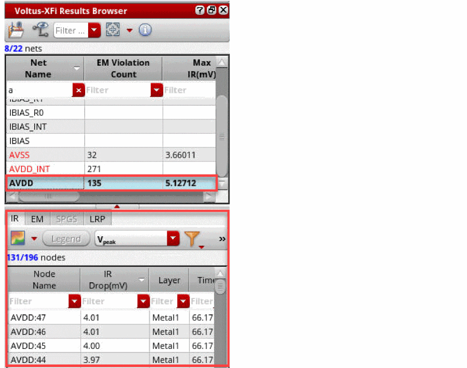
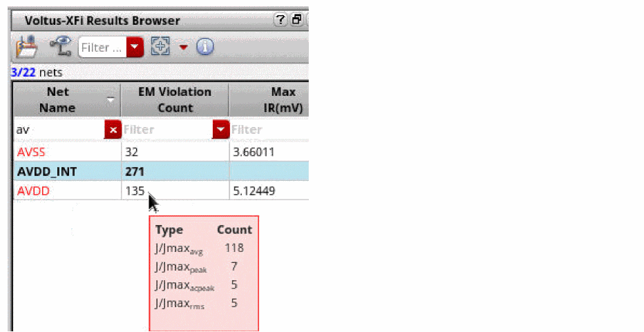
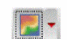
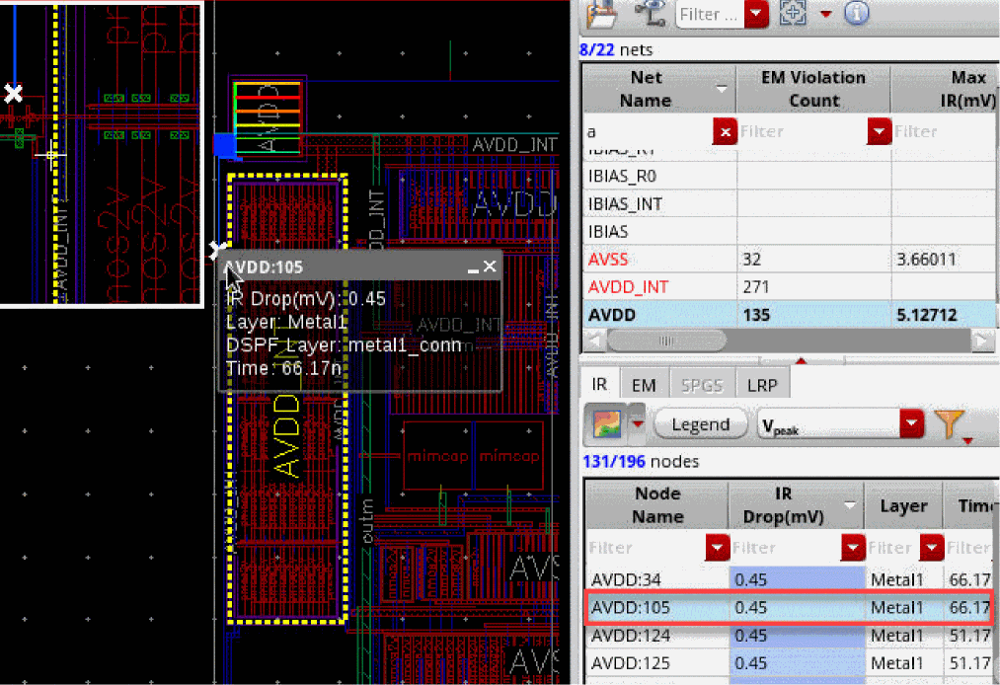
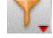
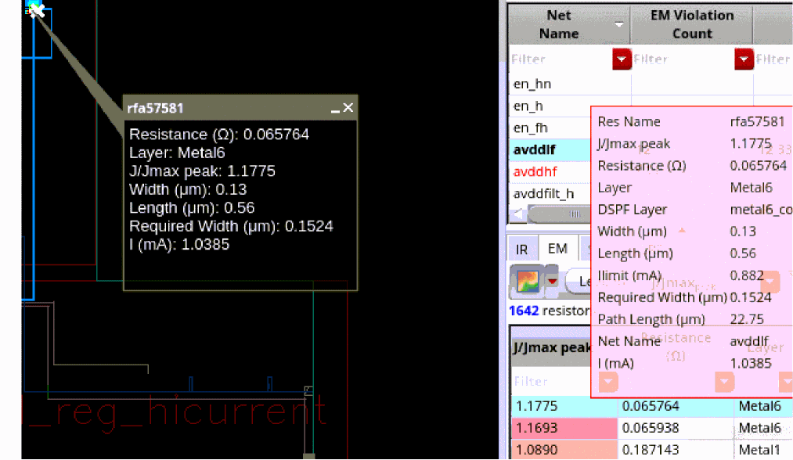

Visualizing EM-IR Analysis Results using Voltus-XFi Results Browser
You can analyze the EM and IR drop violations in detail using the Voltus-XFi Results Browser assistant. Do the following:
- On the Voltus-XFi Results Browser, click Load EMIR Results to load the results database.
-
Select a net in the Net Summary (top) section and click Load Nets
 . Alternatively, you can either double-click a net name or select the Load Nets option from the shortcut menu of the net to view net details.
. Alternatively, you can either double-click a net name or select the Load Nets option from the shortcut menu of the net to view net details.
Details of all nodes/resistors/paths of the net appear in the lower section of the assistant as follows:If you mouseover the EM Violation Count column in the Net Summary section, a tooltip appears showing you the violations for each EM analysis type.
 - Depending on whether you want to view the EM or IR drop plots, select the required tab in the lower section of the assistant.
- Click the Plot Results ( ) icon to view the heat map plot for the complete net. You can use the down arrow to adjust the transparency of the layout.
- Select a plot type from drop-down list.
-
Select a node/resistor in the lower section of the assistant.
The node/resistor is highlighted on the layout. The following image shows a node selected in the IR tab.You can view the layer-based heatmap by clicking the Filter Layer from Results  drop-down button in the IR or EM tab, select Hide All Layers, and then select the required layers.
The following image shows a resistor selected in the EM tab.The EM tab shows resistors that violate EM in red to easily identify EM violations.
Related Topics
- The Voltus-XFi Results Browser Graphical User Interface
- Performing LRP Analysis
- Viewing EM-IR Analysis Reports
- Viewing Waveform Results
- Querying Specific Areas and Shapes in the Layout for Node/Resistor Information
Return to top